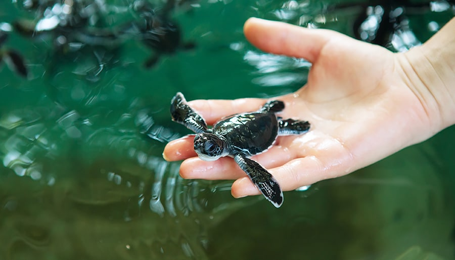
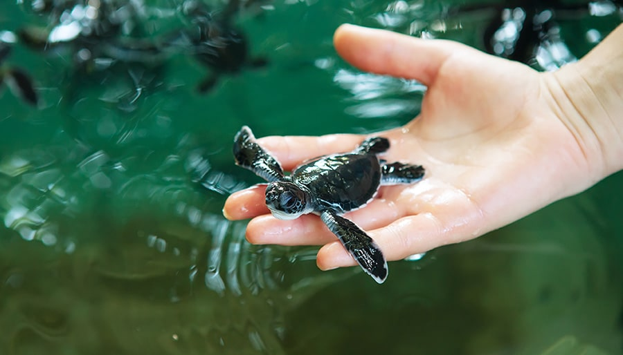

-
Turtle Hatcheries In Sri Lanka


.jpg)
 

The Bentota Turtle Hatchery Project is a popular attraction in Bentota for all travellers. The pristine golden shores that draws you to our island, also provides an enticing nesting ground for several endangered turtle species from the Olive Ridley to the Leatherback turtle. The project aims at conserving and protecting the eggs from predators and other dangers. Visit the turtle hatchery in Bentota to learn about these endangered graceful creatures of the sea.
The Turtle Hatchery protects the eggs until they hatch and are ready to swim back home. The project also rescues turtles that are injured while at sea, due to fishing nets, motors and more. They are often rehabilitated before being released back. The Bentota Turtle Hatchery is located approximately 10 minutes away from our beachfront properties.
Left on their own, turtle eggs are susceptible and defenceless against predators; there is also a danger of the eggs being found by local fishermen and sold to poachers, who in turn sell them on the black market. The hatcheries combat this by buying the eggs from the fishermen at a higher price, encouraging them to keep bringing in the endangered eggs to a safer location.
Once at the hatchery, the eggs are kept safely buried in sand until they emerge from their shells, when they are moved and placed into tanks for the first few days of their lives. This gives them to opportunity to grow stronger before they are released back to the dangers of the sea, increasing their odds of survival. Several species of turtles are saved in this way.
At sunset, you can witness the baby turtles being set free on the beach and watch them make their way back to the ocean. Visitors are asked to be mindful of the process of returning baby turtles to the sea. Loud noises are not allowed, nor are bright lights and flash photography; the baby turtles can confuse the lights for the moon over the ocean, which hinders them from being able to return home.